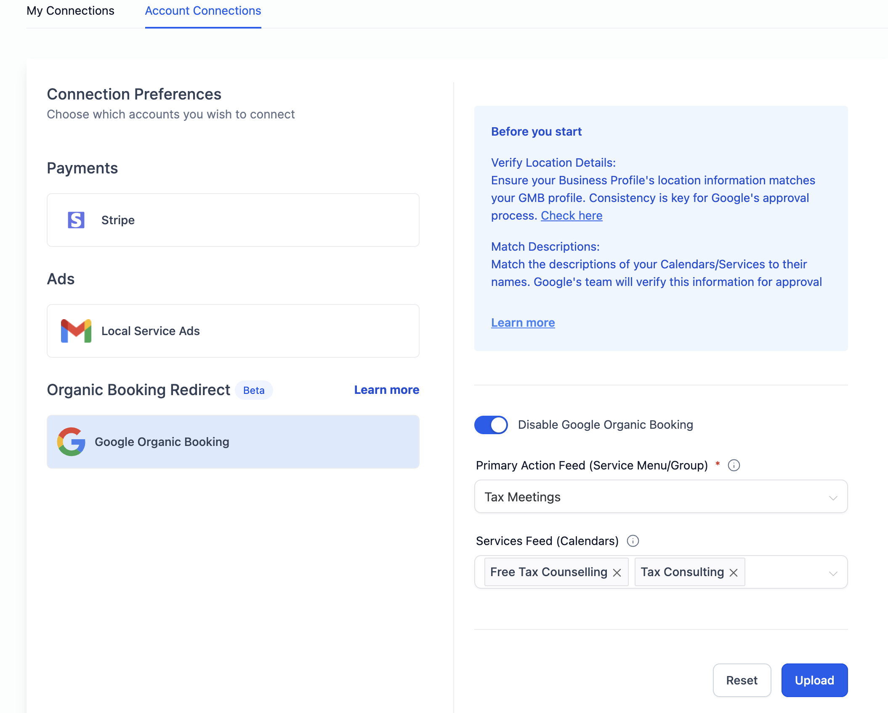
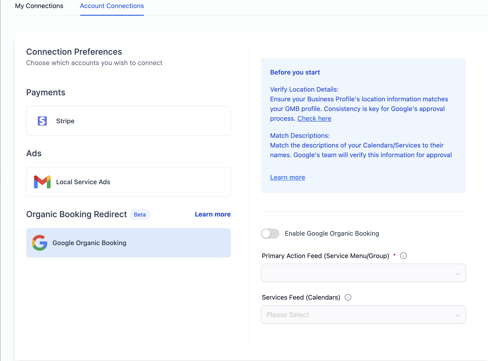

How to Disable Integration?
Users have the option to disable Google Organic Booking with a simple toggle in Calendar Settings. By disabling the integration, the system refrains from uploading any feed to Google. Consequently, the end customers won't find the option to discover and book services directly from a business's Google My Business (GMB) listing.
To disable the integration:
- Navigate to Calendar Settings > Connections Tab
- In the Account Connections tab, locate the Google Organic Booking section.
- Toggle the switch to disable Google Organic Booking.

